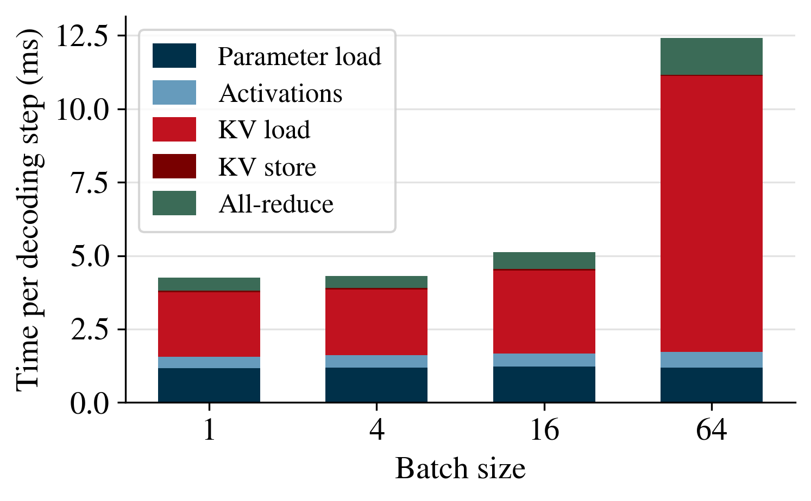
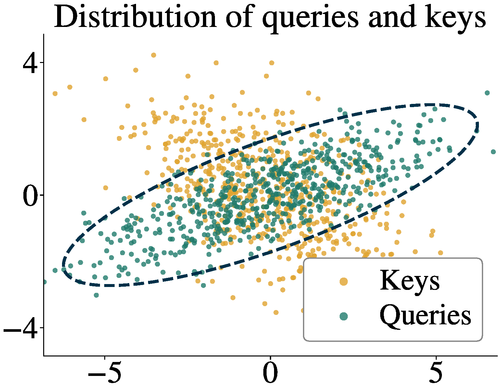
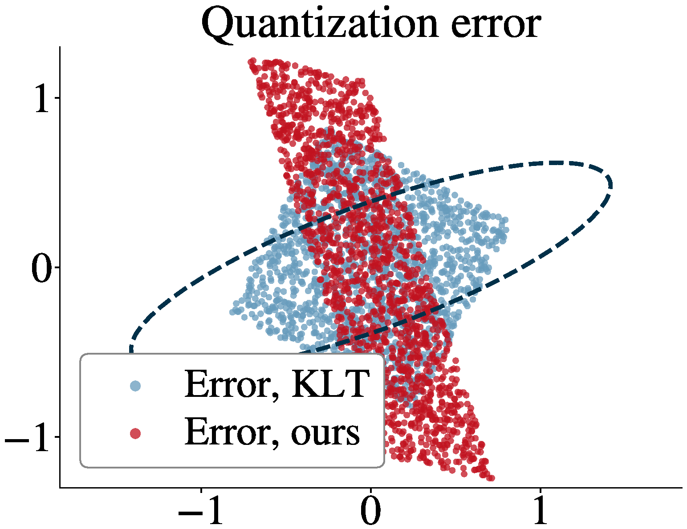
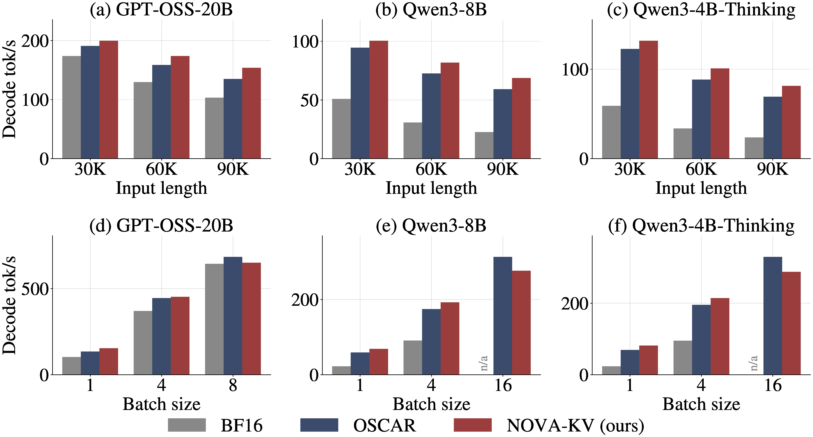

Abstract
Long-context LLM decoding reads the key–value (KV) cache at every step. Loading it takes longer than computing attention over it, so throughput is bandwidth-bound, and reducing the cache size raises both decoding speed and serving capacity. The challenge is to shrink the cache while preserving the attention products, keeping reconstruction cheap, and using a fixed per-token bit count. At two bits per element the most competitive methods rely on orthogonal transforms, but these are either data-oblivious or use the query statistics without deriving the transform from a distortion criterion. We formulate KV cache quantization as a transform coding problem whose distortion is the error in the attention products, and derive closed-form optimal transforms for keys and values from calibration statistics. The optimal key transform is not orthogonal, and it satisfies a generalized Parseval relation that turns the attention-aware distortion into ordinary mean-squared error in the transform domain, so MSE-optimal vector quantizers apply directly. To meet the fixed-width layout requirement, we show that grouping coefficients into equal-volume partitions lets equal-size codebooks attain the variable-rate optimum. At two bits per element, NOVA-KV recovers most of the long-context retrieval accuracy lost by scalar quantization, at comparable throughput.
KV cache quantization
A transformer caches one key and one value vector per token, per layer, per head. This cache grows with context length and with batch size, and every decoding step must read all of it back from memory. Modern kernels compute attention faster than the cache can be loaded, so once the context is long, the cache becomes the bottleneck.

Three requirements
Three requirements constrain the design of KV cache compressors.
- Accuracy. What has to be preserved is downstream task performance. A quantizer cannot optimize that directly, so it needs a proxy. Since the cache is only ever read through the attention computation, we use the error in the attention products as the proxy.
- Read cost. The cache is read at every decoding step, so any per-element work at read time is paid over the whole cache, every step.
- Fixed-width layout. Serving engines page the cache, so every token must occupy the same number of bits.
We pose the problem as transform coding with the attention-product error as the distortion. This gives an optimal transform, and that transform is not a rotation.
What's wrong with MSE?
Standard quantizers minimize the error in the stored keys and values. Keys are read through the key–query inner product. Two reconstructions with identical MSE can distort the attention logits by very different amounts, depending on whether their error lands in directions the queries look along.


Transform coding for the attention products
The optimal transform is not orthogonal
Minimizing the query-weighted distortion gives a transform that first whitens by the query second-moment matrix and only then decorrelates. Every prior method constrains the transform to be a rotation; we show that is strictly suboptimal whenever the query statistics are anisotropic. Its inverse folds into the query, so non-orthogonality costs nothing at decode time.
A generalized Parseval relation
That transform satisfies a generalized Parseval relation: the attention-aware distortion becomes ordinary MSE in the transform domain. This is what lets any off-the-shelf MSE-optimal vector quantizer act directly on the coefficients, with no correction term.
Equal-volume grouping recovers the coding gain
Optimal bit allocation wants codebooks of different sizes, which fixed-width cache layouts forbid. We show that partitioning the coefficients into groups of equal variance-volume makes equal-size codebooks attain the variable-rate optimum, so the coding gain survives the layout constraint.
Results
(OSCAR: 25.3)
reasoning & code
Long-context retrieval
Retrieval is where the methods separate. On Qwen3-8B the scalar baselines collapse as context grows, while NOVA-KV tracks the uncompressed reference:
| Method | BPE | 8K | 32K | 64K | 128K |
|---|---|---|---|---|---|
| BF16 (uncompressed) | 16 | 99.9 | 98.5 | 84.3 | 83.4 |
| QuaRot | 2.25 | 54.8 | 23.5 | 0.0 | 0.0 |
| OSCAR | 2.28 | 96.7 | 86.9 | 60.6 | 25.3 |
| NOVA-KV (ours) | 2.22 | 99.4 | 96.0 | 76.4 | 75.4 |
RULER NIAH mean accuracy (%), Qwen3-8B.
Throughput
Accuracy is only half the claim: a smaller cache has to actually decode faster. We measure decode throughput in SGLang, excluding time to first token.

Robustness across architectures
The gap widens on models where orthogonal transforms struggle. On GPT-OSS-20B, NOVA-KV preserves most of the BF16 accuracy on every generation benchmark (mean 72.4 against 76.5), while OSCAR collapses to a mean of 13.9, scoring 0.0 on both LiveCodeBench v6 and AIME25, and TurboQuant falls to 37.4. Across all four models tested, NOVA-KV stays close to BF16 while the robustness of the orthogonal-transform baselines varies considerably.